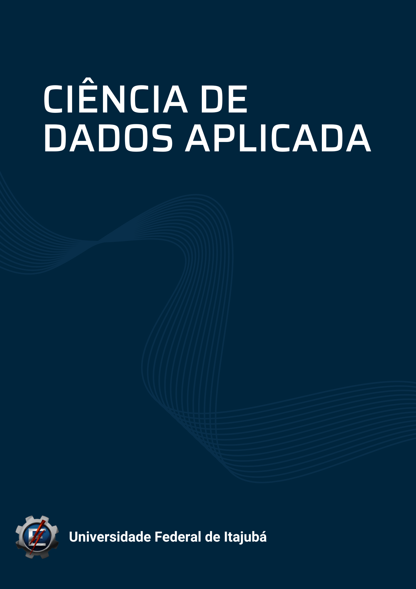

17 ESTRUTURA CURRICULAR
A estrutura curricular do Bacharelado em Ciência de Dados Aplicada foi organizada de forma a garantir a formação integral do estudante, combinando fundamentos teóricos, habilidades práticas aplicadas a uma trilha de conhecimento. O curso possui 8 períodos, com carga horária total aproximada de 3.870 horas.aula (3.225 horas.relógio), conforme normas institucionais da UNIFEI. Todas as disciplinas são organizadas a partir de três eixos formativos que se articulam ao longo dos semestres, permitindo ao estudante avançar de fundamentos conceituais para aplicações especializadas:
- Núcleo de Conteúdos Básicos e Técnicos
Compreende as disciplinas fundamentais de matemática, estatística, computação, ciência de dados, engenharia de dados e machine learning. Abrange todas as disciplinas obrigatórias ofertadas entre o primeiro e o sexto semestre, e fornece a base conceitual e prática sobre a qual se estruturam as trilhas aplicadas e os projetos integradores. Esse núcleo consolida as competências analíticas, computacionais e metodológicas essenciais ao cientista de dados.
- Disciplinas Aplicadas às Trilhas Temáticas
O curso oferece três trilhas de especialização — Saúde, Esporte e Gestão — nas quais os estudantes aplicam os conhecimentos básicos e técnicos a contextos reais. As trilhas incluem:
Componentes obrigatórios vinculados aos Projetos Integradores (PI 1 no quarto semestre e PI 2 no sexto semestre), nos quais problemas reais das trilhas são estruturados e solucionados.
Componentes optativos, cursados a partir do sexto semestre, dos quais o estudante deve cumprir no mínimo 12 horas-aula em três disciplinas, completando uma trilha com cinco disciplinas aplicadas ao tema escolhido.
Esse eixo promove a contextualização prática dos conteúdos técnicos, o desenvolvimento de soluções orientadas por dados e a formação por áreas de interesse.
- Disciplinas Complementares de Gestão
Reúne componentes obrigatórios voltados à formação em gestão empresarial, gestão da produção e inovação, essenciais para profissionais que atuarão na interface entre análise de dados, processos organizacionais e decisões estratégicas. São componentes deste eixo: Gestão Ágil de Projetos, Planejamento e Controle da Produção, Indústria 4.0, Engenharia da Qualidade, Engenharia Econômica e Criação de Negócio.
Essas disciplinas são ofertadas entre o primeiro e o sexto semestre e visam desenvolver competências gerenciais necessárias para a viabilização de soluções, produtos, startups e aplicações resultantes dos conteúdos técnicos e das trilhas.
| Semestre 1 | CH | Semestre 2 | CH | Semestre 3 | CH | Semestre 4 | CH | Semestre 5 | CH | Semestre 6 | CH | Semestre 7 | CH | Semestre 8 | CH |
|---|---|---|---|---|---|---|---|---|---|---|---|---|---|---|---|
| Cálculo A | 4 | Cálculo B | 4 | Cálculo C | 4 | Projeto Integrador 1 | 6 | Estatística Multivariada | 3 | Projeto Integrador 2 | 6 | TCC 1 |
|
TCC 2 |
|
| Análise Exploratória de Dados | 3 | Álgebra Linear Computacional | 3 | Otimização 1 | 3 | Otimização 2 | 3 | Automação Low-Code e Integração de Dados | 4 | Engenharia Econômica | 3 | Criação de Negócio | 3 | Estágio Supervisionado |
|
| Probabilidade e Estatística | 3 | Inferência Estatística | 2 | Machine Learning 1 | 3 | Machine Learning 2 | 3 | Machine Learning 3 | 2 | Metaheuristicas | 3 | Agentes de IA | 3 |
|
|
| Introdução a Ciência de Dados | 3 | Estrutura de Dados e Algoritmos | 3 | Engenharia de Dados | 2 | Análise e Processamento de Sinais 1 | 3 | Análise e Processamento de Sinais 2 | 3 | Disciplinas Optativas (Trilhas do Curso) | 3 | Disciplinas Optativas (Trilhas do Curso) | 3 |
|
|
| Programação 1 | 3 | Programação 2 | 3 | Engenharia de Software | 3 | Computação em Núvem | 3 | Big Data e Processamento Distribuído | 3 | Disciplinas Optativas (Trilhas do Curso) | 3 | Disciplinas Optativas (Trilhas do Curso) | 3 |
|
|
| Engenharia da Transformação Digital | 3 | Visualização de Dados | 3 | Banco de Dados 1 | 2 | Banco de Dados 2 | 3 | Ética e Governança de Dados | 3 | Projeto e Análise de Experimentos | 3 | Disciplinas Optativas (Gerais) | 3 |
|
|
|
|
|
Gestão Ágil de Projetos | 2 | Planejamento e Controle da Produção | 3 | Industria 4.0: Conceitos e Fundamentos | 2 | Engenharia da Qualidade | 3 | Visão Computacional | 3 |
|
|
|
|
Considerando os 8 semestres previstos para o curso, o currículo compreende 3.870 horas.aula (3.225 horas.relógio). Toda sua estrutura foi projetado de forma a balancear as várias unidades de estudo. A previsão é de haver entre 6 e 7 disciplinas por semestre.
Com a finalidade de fortalecer a integração do estudante com os temas característicos da Administração e da Engenharia de Produção — áreas estruturantes do Instituto de Engenharia de Produção e Gestão (IEPG) — o curso adota como optativas todas as disciplinas optativas ofertadas pelos cursos de Administração e Engenharia de Produção. Além disso, no sétimo semestre o estudante deverá obrigatoriamente cursar ao menos uma disciplina optativa que não pertença às trilhas temáticas. Essa diretriz amplia sua vivência acadêmica para além do eixo técnico, estimula a transversalidade entre os cursos do instituto e promove uma formação interdisciplinar e aplicada, alinhada às demandas contemporâneas de profissionais capazes de articular conhecimentos de dados, gestão e processos organizacionais.
17.1 Projeto Integrador
Os projetos integradores têm como foco a aplicação prática dos conhecimentos adquiridos ao longo do curso, promovendo a interdisciplinaridade e preparando os alunos para os desafios do mercado de trabalho. A participação em projetos reais também estimula o desenvolvimento de habilidades como trabalho em equipe, comunicação e resolução de problemas. Em ambas as disciplinas, os projetos são voltados ao desenvolvimento de atividades de extensão, o que demonstra a preocupação do PPC em introduzir de forma estruturada a extensão universitária na grade curricular, reforçando seu caráter formativo, social e aplicado.
Projeto Integrador 1 - Análise de dados em tempo real: Esta disciplina tem por finalidade desenvolver um sistema que permita a coleta, análise e visualização de dados em tempo real, aplicando técnicas de ciência de dados e machine learning.
Estrutura do Projeto:
Introdução: Contextualização do problema a ser resolvido e importância da análise de dados em tempo real em setores escolhidos pelos alunos de acordo com as trilhas de aprendizagem.
Coleta de Dados: Definição das fontes de dados (APIs, sensores, bancos de dados).
Processamento de Dados: Utilização de ferramentas como Python, R ou plataformas como Apache Kafka para o processamento em tempo real.
Modelagem: Aplicação de algoritmos de machine learning para prever tendências ou comportamentos.
Implementação: desenvolvimento do sistema de coleta e análise; criação de dashboards interativos utilizando ferramentas como Tableau ou Power BI.
Resultados Esperados: relatório detalhando a eficiência do sistema e visualizações que demonstrem insights obtidos a partir dos dados analisados.
Conclusão: reflexão sobre o aprendizado e a aplicabilidade do projeto no mercado de trabalho.
Apresentação: apresentação oral do projeto para a turma e professores, com demonstração prática do sistema desenvolvido.
Projeto Integrador 2 - Soluções de Machine Learning: Esta disciplina tem por objetivo criar uma solução que utilize machine learning para abordar um problema real específico da trilha de aprendizagem.
Estrutura do Projeto:
Introdução: Identificação, justificativa e relevância do problema a ser abordado.
Metodologia:
Pesquisa e Levantamento de Dados: Coleta de dados relevantes (ex: dados de saúde, índices de criminalidade).
Análise Exploratória: Uso de técnicas de visualização para entender os dados.
Desenvolvimento do Modelo: Escolha do algoritmo apropriado (ex: regressão, classificação) e treinamento do modelo.
Implementação: criação de um protótipo da solução, como um aplicativo ou uma plataforma web com integração do modelo de machine learning na solução proposta.
Resultados Esperados: avaliação do modelo com métricas apropriadas (ex: precisão, recall) e impacto esperado da solução no problema social identificado.
Conclusão: discussão sobre os desafios enfrentados durante o desenvolvimento e possíveis melhorias.
Apresentação: apresentação do projeto, destacando a importância da ciência de dados na solução de problemas sociais e a eficácia da solução proposta.
17.2 Trabalho de Conclusão de Curso
O Trabalho de Conclusão de Curso (TCC) é uma etapa fundamental na formação dos alunos da Universidade Federal de Itajubá (UNIFEI). Ele representa a culminação do aprendizado e a aplicação prática dos conhecimentos adquiridos ao longo do curso. A seguir, são apresentados os principais aspectos relacionados ao TCC na UNIFEI:
- Objetivo do TCC
- Integração do Conhecimento: O TCC visa integrar os conhecimentos teóricos e práticos adquiridos durante o curso, permitindo que os alunos demonstrem sua capacidade de pesquisa, análise e síntese.
- Desenvolvimento de Competências: Os alunos desenvolvem competências essenciais, como pesquisa, escrita acadêmica, apresentação oral e trabalho em equipe.
O Trabalho de Conclusão de Curso (TCC) segue as normas para Trabalho de Conclusão de Curso publicadas no Anexo C da Norma de Graduação alterada pelo CEPEAd em 12/12/2018.
No que se refere às regras específicas das componentes curriculares TCC1 e TCC2, este documento estabelece:
- O período de matrícula no componente curricular TCC é de até 15 dias após o início das aulas estabelecido no calendário acadêmico do semestre.
- As modalidades de trabalhos aceitos são monografia ou artigo.
- Os formatos dos trabalhos aceitos são: (i) para monografias o modelo ABNT e (ii) para artigos nos modelos da SBC ou dos periódicos IEEE. Caso o artigo já tenha sido aprovado e publicado em revistas/eventos com Qualis, ele poderá ser entregue no formato da publicação.
- Os trabalhos do TCC1 serão apresentados a uma banca examinadora. O documento apresentado à banca deverá conter, pelo menos: (i) os objetivos, (i) revisão bibliografia e/ou fundamentação teórica, (iii) descrição da metodologia de pesquisa e (iv) cronograma para o TCC2.
- As bancas examinadoras do TCC1 e TCC2 serão compostas por dois examinadores e pelo professor orientador, sendo os examinadores escolhidos pelo orientador e aluno.
- A validação de Trabalhos de Conclusão de Curso externos é realizada pelo Colegiado do Curso.
- Trabalhos de conclusão de curso com publicações segundo classificação Capes com Qualis nas áreas de Engenharia ou Computação, cujos autores sejam limitados ao discente orientado do TCC e aos orientadores, são aceitos como TCC, dispensando a banca examinadora no TCC1 e TCC2. A validação da área da publicação deverá ser realizada pelo Colegiado do Curso. Neste caso, o discente, para ser dispensado da banca examinadora, deve ser o primeiro autor do artigo. Entende-se como orientadores os outros autores que exercem a função de docência ou possuem experiência reconhecida na área do trabalho.
- O Trabalho de conclusão de curso será desenvolvido individualmente.
17.3 Atividades de extensão
As diretrizes de extensão da Unifei são alinhadas com sua missão no que se refere a promover a integração entre ensino, pesquisa e extensão. Estando em conformidade com a Lei de Diretrizes e Bases da Educação Nacional (LDB) e as resoluções do Conselho Nacional de Educação (CNE), que orientam a prática da extensão universitária como uma função essencial das instituições de ensino.
Assim a norma para curricularização das atividades de extensão da Unifei define que Extensão na Educação Superior Brasileira é a atividade que se integra à matriz curricular e à organização da pesquisa, constituindo-se em processo interdisciplinar, político, educacional, cultural, científico, tecnológico, que promove a interação transformadora entre as instituições de ensino superior e os outros setores da sociedade, por meio da produção e da aplicação do conhecimento, em articulação permanente com o ensino e a pesquisa.
As atividades de extensão na Unifei deverão compor, no mínimo, 10% (dez por cento) do total da carga horária curricular de cada curso de graduação, as quais farão parte das matrizes curriculares dos cursos e deverão estar descritas em seus Projetos Pedagógicos.
Para efeitos de caracterização nos Projetos Pedagógicos dos Cursos de Graduação da Unifei, as atividades de extensão devem se inserir nas modalidades:
- Programa: é um conjunto de atividades integradas, de médio e longo prazo, orientadas a um objetivo comum e que visam à articulação de projetos e outras atividades de extensão, cujas diretrizes e escopo de interação com a sociedade integram-se às linhas de ensino e pesquisa desenvolvidas pela UNIFEI, nos termos do Regimento Geral e do Plano de Desenvolvimento Institucional 2019-2023;
- Projeto: é a ação de caráter educativo, social, cultural, científico, tecnológico ou de inovação tecnológica, com objetivo específico e prazo determinado, vinculado ou não a um programa;
- Curso/oficina: é um conjunto articulado de atividades pedagógicas, de caráter teórico e/ou prático, nas modalidades presencial ou a distância, seja para a formação continuada, aperfeiçoamento ou disseminação do conhecimento, planejado, organizado e avaliado de modo sistemático, com carga horária e critérios de avaliação bem definidos;
- Evento: é a ação de curta duração que implica a apresentação e/ou exibição pública, livre ou com clientela específica do conhecimento ou produto cultural, artístico, esportivo, científico e tecnológico desenvolvido, conservado ou reconhecido pela UNIFEI;
- Prestação de serviços: refere-se ao estudo e à solução de problemas dos meios profissional ou social e ao desenvolvimento de novas abordagens pedagógicas e de pesquisa, bem como a transferência de conhecimentos e tecnologia à sociedade.
No contexto do presente curso, as atividades de extensão serão incorporadas de forma estruturada e integrada ao percurso formativo dos estudantes, garantindo que a prática extensionista não seja tratada apenas como um componente isolado, mas como um eixo articulador entre conhecimento acadêmico, aplicação prática e impacto social. Para isso, o curso promoverá projetos e ações que envolvam diretamente comunidades, empresas, instituições públicas e organizações sociais, permitindo que os alunos utilizem ferramentas de ciência de dados, inteligência artificial, engenharia de dados e análise estatística para resolver problemas reais. Dessa forma, a extensão assumirá papel ativo na formação profissional, estimulando o desenvolvimento de competências como comunicação, trabalho em equipe, ética, responsabilidade socioambiental, visão sistêmica e inovação tecnológica.
Além disso, as atividades de extensão serão distribuídas ao longo dos semestres, podendo ser vinculadas tanto a disciplinas específicas quanto a projetos integradores, estágios e ações extracurriculares reconhecidas pela coordenação do curso. Serão incentivadas variadas modalidades, como cursos de capacitação para a comunidade, desenvolvimento de soluções tecnológicas em parceria com setores produtivos, participação em eventos científicos e tecnológicos, consultorias orientadas, além da atuação em programas institucionais de apoio ao ensino e à inovação. Essa abordagem permitirá que os estudantes vivenciem a universidade como agente transformador da sociedade, fortalecendo a indissociabilidade entre ensino, pesquisa e extensão, e garantindo o cumprimento das diretrizes da Unifei e da legislação nacional sobre curricularização da extensão.
17.4 Trilhas de Aprendizagem
As trilhas de aprendizagem constituem um eixo formativo que permite ao estudante direcionar sua trajetória acadêmica conforme seus interesses profissionais e áreas de afinidade. No curso de Ciência de Dados Aplicada, as trilhas representam percursos temáticos estruturados que articulam a aplicação prática dos conteúdos técnicos aprendidos nos primeiros semestres a contextos reais de atuação. São ofertadas três trilhas: Saúde, Esporte e Gestão. Cada trilha tematiza um conjunto de desafios contemporâneos nesses setores, permitindo que o aluno compreenda fenômenos, estruturas, processos e métricas próprias de cada domínio.
Na trilha Saúde, o foco recai sobre dados biomédicos, sistemas assistenciais e aplicações preditivas voltadas ao cuidado e à gestão hospitalar.
| DISCIPLINAS | CH |
|---|---|
| Data Analytics Aplicado à Saúde | 48 |
| Machine Learning e Padrões em Saúde | 48 |
| Análise de Imagens Médicas com IA | 48 |
| Tópicos Especiais: Fontes de Dados da Saúde | 48 |
A trilha Esporte explora análises de desempenho, biomecânica, monitoração de atletas e soluções baseadas em dados para ciência do movimento.
| DISCIPLINAS | CH |
|---|---|
| Data Analytics Aplicado ao Esporte | 48 |
| Machine Learning para Precificação de Atletas | 48 |
| Machine Learning para Carga de Treino e Prevenção de Lesões | 48 |
| Scouting com Machine Learning | 48 |
| Tópicos Especiais: Fontes de Dados no Esporte | 48 |
| Tópicos Especiais: Visualização de Dados no Esporte | 48 |
Já a trilha Gestão enfatiza processos organizacionais, tomada de decisão, otimização de recursos e soluções analíticas aplicadas a ambientes corporativos e públicos.
| DISCIPLINAS | CH |
|---|---|
| Data Analytics Aplicado à Gestão | 48 |
| Ciência de Dados para Gestão de Portfólios | 48 |
| Ciência de Dados para Análise de Conjuntura Macroeconômica | 48 |
| Tópicos Especiais: Machine Learning para Marketing | 48 |
| Tópicos Especiais: Fontes de Dados Econômicos | 48 |
| Tópicos Especiais: Econometria | 48 |
A criação das trilhas de Saúde, Esporte e Gestão responde diretamente às transformações estruturais observadas nos setores produtivos e sociais, nos quais a análise de dados passou a desempenhar papel central na tomada de decisão, na eficiência operacional e na inovação. A área da Saúde demanda cada vez mais profissionais capazes de lidar com grandes volumes de dados, modelagem preditiva e soluções tecnológicas aplicadas ao cuidado, gestão assistencial e avaliação de desempenho de sistemas. O Esporte, por sua vez, tornou-se um campo altamente orientado por métricas, algoritmos e análises de performance, exigindo competências em monitoramento de atletas, análise de jogo e desenvolvimento de estratégias baseadas em evidências. Já a trilha de Gestão acompanha o movimento de integração entre ciência de dados, negócios e processos organizacionais, permitindo que o estudante compreenda fenômenos corporativos, desenvolva soluções analíticas e participe de processos de tomada de decisão orientados por dados.
Assim, as três trilhas foram concebidas para conectar os conteúdos técnicos do curso a áreas reais de aplicação, proporcionando ao estudante uma formação interdisciplinar, prática e alinhada às demandas contemporâneas. Elas ampliam a capacidade de atuação do futuro egresso, permitem o desenvolvimento aprofundado de competências específicas e reforçam o compromisso do curso com uma formação orientada a problemas, evidências e resultados.
Adicionalmente, ao escolher uma trilha, o estudante desenvolve a competência de aprender a aprender, pois assume um papel ativo na construção de sua formação, selecionando temas, problemas e métodos que dialogam com sua trajetória. Essa autonomia curricular reforça o caráter aplicado do curso, uma vez que as disciplinas optativas das trilhas — distribuídas conforme cada itinerário — são orientadas pela prática e voltadas à resolução de problemas reais. O estudante passa a articular teoria e prática de forma progressiva, integrando fundamentos de ciência de dados com demandas concretas dos setores escolhidos.
As trilhas também fortalecem a interdisciplinaridade, pois conectam conteúdos de estatística, computação e engenharia de dados a saberes específicos de áreas como saúde, biomecânica, mercados, análises de negócio e gestão pública. Dessa forma, o aluno desenvolve uma visão sistêmica e profissionalmente orientada.
A partir do sexto semestre, o estudante deve cursar as disciplinas optativas de trilha previstas para completar seu percurso formativo, conforme a matriz curricular definida. A lista completa das disciplinas optativas de cada trilha encontra-se apresentada a seguir, conforme planilha oficial da grade curricular.
O percurso formativo das disciplinas optativas não se limita exclusivamente às trilhas temáticas. Embora o estudante tenha a possibilidade de aprofundar-se em Saúde, Esporte ou Gestão, o currículo prevê também o acesso a um conjunto ampliado de componentes optativos que abordam temas contemporâneos da área de Ciência de Dados, além de disciplinas ofertadas pelos cursos de Engenharia de Produção e Administração. Essa abertura curricular fortalece a interdisciplinaridade e permite que o discente explore diferentes perspectivas teóricas e aplicadas, ampliando sua formação para além do eixo técnico e temático.
| DISCIPLINAS | CH |
|---|---|
| Data Analytics Aplicado à Energia | 48 |
| Computação Quântica para Machine Learning (Quantum AI) | 48 |
| Edge AI e Sistemas Embarcados Inteligentes | 48 |
| Quantificação de Incertezas em modelos de IA | 48 |
| IA Simbólica e Sistemas Baseados em Conhecimento | 48 |
| Aprendizado por Reforço Profundo Avançado | 48 |
| Todas as disciplinas dos cursos de engenharia de produção e administração | - |
Dessa forma, o curso incentiva trajetórias personalizadas, conectadas a interesses acadêmicos e profissionais diversos, sem restringir o desenvolvimento formativo a um único itinerário.
17.5 EMENTÁRIO
17.5.1 Disciplinas Obrigatórias
A seguir são descritas o ementário das disciplinas obrigatórias do curso de Ciência de Dados Aplicada por sementre.
Primeiro Semestre
- DISCIPLINA: Cálculo A.
- SIGLA: MAT00A.
- CH (hora.aula): 64h.
- Funções, Limite e Continuidade, Derivada e Integral.
- DISCIPLINA: Análise Exploratória de Dados.
- SIGLA: CDAXX.
- CH (hora.aula): 48h.
- Fundamentos de análise exploratória. Tipos e estruturas de dados. Estatística descritiva. Medidas de tendência central e dispersão. Distribuições de dados. Detecção de outliers. Visualização de dados. Gráficos univariados e multivariados. Correlação e covariância. Transformações de dados. Padronização e normalização. Redução de dimensionalidade exploratória. Tratamento de dados faltantes. Preparação e limpeza de dados. Boas práticas em análise exploratória.
- DISCIPLINA: Probabilidade e Estatística.
- SIGLA: IEPG03.
- CH (hora.aula): 48h.
- Conceitos e definições estatísticas; Estatística descritiva; Cálculo de probabilidade; Distribuições de probabilidade para variáveis discretas; Distribuições de probabilidade para variáveis contínuas; estimativa pontual e intervalar; Amostragem.
- DISCIPLINA: Introdução a Ciência de Dados.
- SIGLA: CDAXX.
- CH (hora.aula): 48h.
- Fundamentos de Ciência de Dados. Tipos de dados. Coleta e preparação de dados. Limpeza, transformação e integração de dados. Análise exploratória. Visualização de dados. Estatística descritiva. Probabilidade básica. Modelos preditivos introdutórios. Regressão linear simples. Classificação básica. Métricas de avaliação de modelos. Introdução a aprendizado de máquina. Validação cruzada. Overfitting e underfitting. Ética e responsabilidade no uso de dados. Ambientes e ferramentas para Ciência de Dados..
- DISCIPLINA: Programação 1.
- SIGLA: CDAXX.
- CH (hora.aula): 48h.
- Fundamentos de programação. Variáveis e tipos de dados. Operadores aritméticos e lógicos. Estruturas condicionais. Estruturas de repetição. Listas, tuplas e dicionários. Strings. Funções. Modularização. Entrada e saída de dados. Tratamento de erros. Arquivos. Introdução a algoritmos. Noções de complexidade. Bibliotecas básicas em Python.
- DISCIPLINA: Engenharia da Transformação Digital.
- SIGLA: CDAXX.
- CH (hora.aula): 48h.
- Fundamentos de administração e organizações; estratégia, cadeia de valor e processos; e setores comuns em uma organização (marketing e vendas; operações e supply chain; finanças; recursos humanos. TI e data; jurídico e compliance); transformação digital e modelos de negócio; tendências e futuro.
Segundo Semestre
- DISCIPLINA: Cálculo B.
- SIGLA: MAT00B.
- CH (hora.aula): 64h.
- Equações Paramétricas e Coordenadas Polares, Geometria Analítica, Funções Vetoriais, Funções de Várias Variáveis e Derivadas Parciais.
- DISCIPLINA: Álgebra Linear Computacional.
- SIGLA: CDAXX.
- CH (hora.aula): 48h.
- Espaços Vetoriais. Bases e Dimensão. Espaços com produto interno. Transformações lineares. Autovalores e autovetores. Aplicações à Geometria Analítica. Eliminação Gaussiana. Decomposição LU. Decomposição espectral. Decomposição SVD. Condicionamento. Decomposição QR. Tópicos em análise numérica. Teoria dos Números. Criptografia básica.
- DISCIPLINA: Inferência Estatística.
- SIGLA: CDAXX.
- CH (hora.aula): 32h.
- Teste de hipóteses; Análise de variância; Correlação linear e regressão; Regressão múltipla; Análise de séries temporais; Métodos de amostragem.
- DISCIPLINA: Estrutura de Dados e Algoritmos.
- SIGLA: CDAXX.
- CH (hora.aula): 48h.
- Tipos abstratos de dados. Listas, pilhas e filas. Árvores. Árvores binárias e árvores balanceadas. Tabelas de dispersão (hash). Grafos. Algoritmos de busca. Algoritmos de ordenação. Análise de complexidade. Notação Big-O. Recursão. Estratégias de projeto de algoritmos. Divisão e conquista. Programação dinâmica. Algoritmos gulosos.
- DISCIPLINA: Programação 2.
- SIGLA: CDAXX.
- CH (hora.aula): 48h.
- Programação orientada a objetos. Classes e objetos. Encapsulamento, herança e polimorfismo. Manipulação avançada de estruturas de dados. Tratamento de exceções. Módulos e pacotes. Programação funcional. Geradores e compreensões. Decoradores. Manipulação de arquivos e diretórios. Expressões regulares. Testes automatizados. Introdução à concorrência e paralelismo. Bibliotecas avançadas em Python. Boas práticas de desenvolvimento.
- DISCIPLINA: Visualização de Dados.
- SIGLA: CDAXX.
- CH (hora.aula): 48h.
- Visualização de dados para apoio à decisão, com foco prático em Power BI e complemento por Tableau/Looker Studio/Grafana e Python (pandas/Plotly). Abrange princípios de design e storytelling, escolha de gráficos, modelagem BI (fatos/dimensões), Power Query e DAX para KPIs, conexão a fontes (Excel/SQL/APIs), atualização, publicação no Power BI Service, governança e segurança (RLS).
- DISCIPLINA: Gestão Ágil de Projetos.
- SIGLA: EPOP10.
- CH (hora.aula): 32h.
- Princípios do Agile e do Manifesto, comparação de frameworks (Scrum, Kanban, Lean, XP) e escolha por contexto. Foca em papéis (PO, Scrum Master, equipe), colaboração com stakeholders, visão e objetivos, backlog priorizado por valor/risco, histórias de usuário, estimativas (Planning Poker) e planejamento de sprints com metas e DoR/DoD. Cerimônias (daily, planning, review, retro), métricas de fluxo e valor (lead/cycle time, velocidade, burn-down/up, Cumulative Flow) e gestão visual com Kanban e políticas de WIP. Validação com usuários, gestão de dependências, riscos e qualidade, governança ágil com OKRs e roadmaps, contratos flexíveis e integração com produto/engenharia.
Terceiro Semestre
- DISCIPLINA: Cálculo C.
- SIGLA: MAT00C.
- CH (hora.aula): 64h.
- Integrais Múltiplas e Cálculo Vetorial.
- DISCIPLINA: Otimização 1.
- SIGLA: CDAXX.
- CH (hora.aula): 48h.
- Fundamentos de otimização. Funções de uma variável. Conceitos de mínimo e máximo. Condições de otimalidade. Métodos de busca unidimensional. Busca exaustiva. Busca incremental. Método da bisseção. Método da secante. Método de Newton. Métodos quasi-Newton. BFGS e variantes. Métodos de região de confiança. Métodos baseados em derivadas e sem derivadas. Convergência e análise de desempenho. Aplicações em problemas reais. Introdução a Metaheuristicas.
- DISCIPLINA: Machine Learning 1.
- SIGLA: EPOP17.
- CH (hora.aula): 48h.
- Fundamentos de programação em Python, aprendizagem supervisionada (problemas de regressão e classificação), não supervisionada; Técnicas de balanceamento; Métricas de validação de modelos de regressão (MSE, RMSE, MAE, MAPE) e classificação (acurácia, sensibilidade, especificidade, curva ROC, matriz de confusão); Técnicas de avaliação da capacidade de generalização do modelo (validação cruzada); Análise descritiva, diagnóstica e preditiva; Linguagem de apoio: Python.
- DISCIPLINA: Engenharia de Dados.
- SIGLA: CDAXX.
- CH (hora.aula): 32h.
- Fundamentos de engenharia de dados. Arquiteturas de dados. Modelagem e integração de dados. ETL e ELT. Pipelines de dados. Data lakes e data warehouses. Sistemas distribuídos. Processamento em lote e em fluxo. Mensageria e streaming. Qualidade e governança de dados. Escalabilidade e tolerância a falhas. Armazenamento estruturado e não estruturado. Ferramentas e plataformas de engenharia de dados. Observabilidade e monitoramento de pipelines.
- DISCIPLINA: Engenharia de Software .
- SIGLA: CDAXX.
- CH (hora.aula): 48h.
- Fundamentos de engenharia de software. Processo de desenvolvimento de software. Análise e especificação de requisitos. Modelagem de sistemas. UML. Arquitetura de software. Padrões de projeto. Verificação e validação. Testes de software. Gestão de configuração. Integração contínua. Metodologias ágeis. Gerenciamento de projetos de software. Qualidade de software. Manutenção e evolução..
- DISCIPLINA: Banco de Dados 1.
- SIGLA: CDAXX.
- CH (hora.aula): 32h.
- Fundamentos de bancos de dados. Modelagem de dados. Modelo entidade-relacionamento. Esquemas conceitual, lógico e físico. Modelo relacional. Álgebra relacional. Linguagem SQL. Criação e manipulação de tabelas. Consultas básicas e intermediárias. Integridade referencial. Chaves primárias e estrangeiras. Normalização. Operações de inserção, atualização e exclusão. Introdução a SGBDs..
- DISCIPLINA: Planejamento e Controle da Produção.
- SIGLA: IEPG09.
- CH (hora.aula): 48h.
- Tipos de sistemas produtivos; Modelos de reposição de estoques; Planejamento hierárquico da produção.
Quarto Semestre
- DISCIPLINA: Projeto Integrador 1.
- SIGLA: CDAXX.
- CH (hora.aula): 64h.
- Concepção e implementação de um pipeline de dados em tempo real, cobrindo ingestão de fontes como APIs e sensores, processamento com ferramentas de streaming, persistência em camadas e visualização em dashboards. O curso aborda arquitetura de streaming, janelas e agregações, modelagem de machine learning em, além de segurança, LGPD, observabilidade e confiabilidade operacional. Os alunos desenvolvem um protótipo fim a fim com ingestão, processamento, modelo e dashboard, produzem relatório técnico-executivo com métricas de desempenho (latência, throughput, precisão) e insights, e realizam apresentação com demonstração do sistema e discussão de aplicabilidade no mercado.
- DISCIPLINA: Otimização 2.
- SIGLA: CDAXX.
- CH (hora.aula): 48h.
- Otimização multivariável. Condições de otimalidade de primeira e segunda ordem. Métodos de otimização com restrições. Métodos de penalidade e barreira. Métodos de Lagrangiano aumentado. Programação quadrática. Métodos quasi-Newton multivariáveis. SQP. Região de confiança multivariável. Otimização multiobjetivo. Fronteira de Pareto. Métodos escalarizantes. Weighted sum. ε-constraint. Normal Boundary Intersection (NBI). Normalized Normal Constraint (NNC). Otimização evolutiva multiobjetivo (introdução). Análise de convergência e eficiência. Aplicações em engenharia e ciência de dados.
- DISCIPLINA: Machine Learning 2.
- SIGLA: EPOP18.
- CH (hora.aula): 48h.
- Introdução a redes neurais e aprendizado profundo; Redes Neurais Convolucionais; Redes Neurais Recorrentes; Autoencoders; Aprendizado por reforço; Modelos Grandes de Linguagem (LLM’s); Linguagem de apoio: Python (TensorFlow).
- DISCIPLINA: Análise e Processamento de Sinais 1.
- SIGLA: CDAXX.
- CH (hora.aula): 48h.
- Fundamentos de sinais e sistemas. Sinais contínuos e discretos. Operações com sinais. Sistemas lineares e invariantes no tempo. Convolução. Transformada de Fourier contínua e discreta. Série de Fourier. Transformada Discreta de Fourier (DFT) e FFT. Filtragem no domínio do tempo e da frequência. Amostragem e quantização. Transformada Z. Estabilidade e resposta em frequência. Filtros digitais FIR e IIR. Deteção e extração de características. Processamento estatístico de sinais. Aplicações em engenharia, computação e ciência de dados.
- DISCIPLINA: Computação em Núvem.
- SIGLA: CDAXX.
- CH (hora.aula): 48h.
- Fundamentos de computação em nuvem. Modelos de serviço: IaaS, PaaS e SaaS. Modelos de implantação: nuvem pública, privada e híbrida. Virtualização. Contêineres e orquestração. Armazenamento em nuvem. Redes e segurança na nuvem. Escalabilidade e balanceamento de carga. Arquiteturas serverless. Microsserviços. Provisionamento e automação. Custos e otimização de recursos. Principais provedores de nuvem. Boas práticas de operação e governança na nuvem.
- DISCIPLINA: Banco de Dados 2.
- SIGLA: CDAXX.
- CH (hora.aula): 48h.
- Modelos avançados de bancos de dados. Consultas SQL avançadas. Views. Índices. Triggers. Procedures e funções armazenadas. Controle de transações. ACID. Concorrência e bloqueios. Recuperação e logs. Otimização de consultas. Arquitetura interna de SGBDs. Particionamento e replicação. Banco de dados NoSQL. Modelos chave-valor, documento, grafo e coluna. Processamento distribuído de dados. Integração com aplicações. Segurança em bancos de dados.
- DISCIPLINA: Industria 4.0: Conceitos e Fundamentos.
- SIGLA: EPOP11.
- CH (hora.aula): .
- As revoluções industriais e a Indústria 4.0; Sistemas ciber físicos; Internet das coisas e de serviços; Automação e machine-to-machine; Inteligência artificial e Big Data; Nuvem e Integração de sistemas; RFID; Realidade aumentada e virtual; Manufatura aditiva; Organização e Trabalho 4.0.
Quinto Semestre
- DISCIPLINA: Estatística Multivariada.
- SIGLA: CDAXX.
- CH (hora.aula): .
- Fundamentos de análise multivariada. Matrizes de variâncias e covariâncias. Distância de Mahalanobis. Análise de componentes principais (PCA). Análise fatorial. Análise discriminante. Regressão multivariada. MANOVA. Análise de cluster. Métodos hierárquicos e não hierárquicos. Análise de correspondência. Escalonamento multidimensional. Detecção de outliers multivariados. Normalidade multivariada. Visualização de dados multivariados. Aplicações em ciência de dados, engenharia e ciências sociais.
- DISCIPLINA: Automação Low-Code e Integração de Dados.
- SIGLA: CDAXX.
- CH (hora.aula): .
- .
- DISCIPLINA: Machine Learning 3.
- SIGLA: EPOP19.
- CH (hora.aula): 32h.
- Desenvolvimento de um caso prático real, desde a análise descritiva e diagnóstica dos dados, até a implementação por meio da aplicação de técnicas adequadas de Machine/deep Learning.
- DISCIPLINA: Análise e Processamento de Sinais 2.
- SIGLA: CDAXX.
- CH (hora.aula): 48h.
- Análise tempo-frequência. STFT. Espectrogramas. Wavelets contínuas e discretas. Filtros digitais avançados. Projeto e implementação de filtros FIR e IIR. Filtros adaptativos. LMS e RLS. Modelagem AR, MA e ARMA. Estimação espectral paramétrica e não paramétrica. Processamento de sinais não estacionários. Detecção e classificação de padrões em sinais. Transformadas rápidas e otimizações. Processamento multicanais. Beamforming. Técnicas de separação cega de fontes. ICA. Sinais em ambientes ruidosos. Técnicas de denoising. Aplicações avançadas em engenharia, biomédica, comunicações e vibrações.
- DISCIPLINA: Big Data e Processamento Distribuído.
- SIGLA: CDAXX.
- CH (hora.aula): 48h.
- Fundamentos de Big Data. Arquiteturas distribuídas. Sistemas de arquivos distribuídos. Hadoop e HDFS. MapReduce. Processamento em lote e em fluxo. Apache Spark. RDDs e DataFrames. Otimização de jobs distribuídos. Sistemas de mensageria. Kafka. Pipelines distribuídos. NoSQL e armazenamento escalável. Particionamento e replicação. Tolerância a falhas. Consistência e modelos CAP. Escalabilidade horizontal. Monitoramento e observabilidade em sistemas distribuídos. Boas práticas de processamento distribuído em larga escala.
- DISCIPLINA: Ética e Governança de Dados.
- SIGLA: CDAXX.
- CH (hora.aula): 48h.
- Fundamentos de ética em tecnologia. Princípios de privacidade. Proteção de dados pessoais. LGPD e legislações correlatas. Consentimento e bases legais. Governança de dados. Qualidade e ciclo de vida dos dados. Segurança da informação. Riscos e impactos sociais da IA. Viés algorítmico. Transparência e explicabilidade. Auditoria e conformidade. Responsabilidade digital. Boas práticas de gestão e uso ético de dados.
- DISCIPLINA: Engenharia da Qualidade.
- SIGLA: EP6004.
- CH (hora.aula): 48h.
- Tolerância; Média e Variância de Variáveis Aleatórias; Média e Variância de Funções de Variáveis Aleatórias; Alocação de tolerância; Minimização dos custos de manufatura; Modelagem de Funções de Custo; Regressão Não Linear; Múltiplas características da qualidade; Tolerância para relações não lineares entre componentes; Programação Não-linear; Multiplicadores de Lagrange; Função Perda; Função NTB; Função STB; Função LTB; Projeto robusto; Capacidade de Processo; Índices de Capacidade de Processo para Variáveis (Cp, Cpk, Pp, Ppk, Cpm); Índices de Capacidade de Processo para Atributos; Nível Sigma; Roadmap Six Sigma®; ANOVA para fatores fixos; ANOVA para fatores com níveis aleatórios; ANOVA para fatores mistos; Análise de Sistemas de Medição; Estudos de R&R para variáveis; Estudo de R&R para atributos; Linearidade; Erro Sistemático.
Sexto Semestre
- DISCIPLINA: Projeto Integrador 2.
- SIGLA: CDAXX.
- CH (hora.aula): 64h.
- visa desenvolver uma solução de machine learning para um problema real em áreas como saúde, educação e segurança. O projeto começa com uma introdução que justifica a relevância do problema e segue com uma metodologia em etapas. Primeiro, realiza-se a pesquisa e levantamento de dados relevantes. Em seguida, é feita uma análise exploratória para entender os dados coletados. O desenvolvimento do modelo envolve a escolha do algoritmo apropriado e o treinamento do modelo de machine learning. A implementação consiste na criação de um protótipo, integrando o modelo em uma plataforma. Os resultados esperados incluem a avaliação do modelo com métricas como precisão e recall, além de discutir o impacto da solução no problema social.
- DISCIPLINA: Engenharia Econômica.
- SIGLA: IEPG10.
- CH (hora.aula): 48h.
- Conceitos fundamentais sobre engenharia econômica; matemática financeira; análise de alternativas de investimentos; técnicas de tomada de decisão (VPL, TIR, VA, Pay-Back); métodos de depreciação; influência dos impostos sobre lucro; influência do financiamento com capital de terceiros; demonstração de resultados de um projeto; fluxo de caixa livre do empreendimento e do empreendedor; análise de risco e incerteza na avaliação de projetos.
- DISCIPLINA: Metaheuristicas.
- SIGLA: CDAXX.
- CH (hora.aula): 48h.
- Fundamentos de otimização heurística. Heurísticas construtivas e de busca local. Metaheurísticas clássicas. Simulated Annealing. Algoritmos Genéticos. Estratégias Evolutivas. Enxame de Partículas (PSO). Colônia de Formigas (ACO). Busca Tabu. GRASP. ILS. VNS. Metaheurísticas híbridas. Parametrização e controle adaptativo. Critérios de parada. Otimização multiobjetivo metaheurística. Fronteira de Pareto evolutiva. Avaliação de desempenho e análise de convergência. Aplicações em engenharia, computação e ciência de dados.
- DISCIPLINA: Engenharia da Qualidade 2.
- SIGLA: EP7001.
- CH (hora.aula): 48h.
- Testes de Hipótese; ANOVA; Regressão; Método dos Mínimos Quadrados Ordinários; Arranjos Fatoriais Completos; Arranjos Fatoriais Fracionados; Confundimento e Resolução; Plackett-Burman; Arranjos Ortogonais de Taguchi; Metodologia de Superfície de Resposta; Análise de curvatura; Método do Vetor Gradiente; Arranjo composto central; Box-Behnken; Doptimal designs; Convexidade de funções; Autovalores; Otimização Não-linear; Rotacionalidade; Restrições de Espaço experimental; Restrição esférica; Restrição Elíptica; Otimização de múltiplas respostas; Otimização simultânea de média e variância
- DISCIPLINA: Visão Computacional.
- SIGLA: CDAXX.
- CH (hora.aula): 48h.
- Fundamentos de visão computacional. Formação de imagens. Representação digital de imagens. Pré-processamento e filtragem espacial. Filtros no domínio da frequência. Detecção de bordas e contornos. Segmentação de imagens. Morfologia matemática. Extração de características. Descritores locais e globais. Correspondência de características. Reconhecimento de padrões. Processamento de vídeo. Rastreamento de objetos. Calibração de câmeras. Reconstrução 3D (introdução). Visão computacional clássica versus técnicas baseadas em aprendizado profundo. Aplicações em indústria, saúde e automação.
Sétimo Semestre
- DISCIPLINA: Criação de Negócios.
- SIGLA: EP7002.
- CH (hora.aula): 48h.
- Mindset empreendedor; Modelos de negócios tradicionais versus modelos de negócios inovadores (Startups); Tendências de mercado (Sustentabilidade, Empresas Humanizadas); Identificando oportunidades; Design Thinking; Pesquisa Mercadologia e Pesquisa Design; Desenvolvimento de um modelo de negócio (Canvas); Prototipagem do negócio; Elaboração de um plano de negócio.
- DISCIPLINA: Agentes de IA.
- SIGLA: CDAXX.
- CH (hora.aula): 48h.
- Fundamentos de agentes inteligentes. Arquiteturas de agentes. Agentes reativos, deliberativos e híbridos. Agentes baseados em objetivos e utilidade. Modelagem de ambientes. Percepção e atuação. Planejamento automático. Busca heurística. Raciocínio e tomada de decisão. Lógica e inferência. Aprendizado por reforço. Políticas e funções de valor. Agentes multiagentes. Comunicação e cooperação. Competição e jogos. Ética e segurança em agentes autônomos. Aplicações práticas de agentes de IA..
17.5.2 Disciplinas Optativas das Trilhas
- DISCIPLINA: Data Analytics Aplicado à Saúde.
- SIGLA: CDAXX.
- CH (hora.aula): 48h.
- Estudo e aplicação de técnicas de análise de dados voltadas ao setor de saúde. Uso de bases clínicas, hospitalares, epidemiológicas e administrativas. Métodos de análise exploratória, integração e limpeza de dados em saúde. Modelagem estatística e aprendizado de máquina para apoio ao diagnóstico, previsão de demanda, análise de risco e avaliação de desfechos. Construção de dashboards, indicadores e ferramentas de apoio à decisão. Aplicações em saúde pública, gestão hospitalar, vigilância epidemiológica e atenção primária. Desenvolvimento de estudos de caso com dados reais do setor.
- DISCIPLINA: Machine Learning e Padrões em Saúde.
- SIGLA: CDAXX.
- CH (hora.aula): 48h.
- Conceitos e técnicas de aprendizado de máquina aplicados à detecção de padrões em dados biomédicos, clínicos e epidemiológicos. Modelos supervisionados e não supervisionados para análise de sinais vitais, séries temporais, registros eletrônicos de saúde e dados populacionais. Métodos de seleção de atributos, avaliação de modelos e validação em cenários sensíveis. Interpretação de modelos de ML em saúde e princípios de explainable AI (XAI). Aplicações em previsão de eventos adversos, estratificação de risco, reconhecimento de padrões fisiológicos e apoio à decisão clínica.
- DISCIPLINA: Análise de Imagens Médicas com IA.
- SIGLA: CDAXX.
- CH (hora.aula): 48h.
- Estudo dos fundamentos, técnicas e modelos de inteligência artificial aplicados à análise de imagens médicas. Processamento e pré-processamento de imagens radiológicas, tomográficas, ultrassonográficas e de ressonância magnética. Redes neurais convolucionais (CNNs), segmentação, detecção de anomalias e classificação de estruturas anatômicas. Uso de bancos de imagens médicos, controle de qualidade e aspectos éticos na utilização de IA em diagnósticos por imagem. Desenvolvimento de aplicações práticas e estudos de caso simulando fluxos de diagnóstico assistido por computador.
- DISCIPLINA: Tópicos Especiais: Fontes de Dados da Saúde.
- SIGLA: CDAXX.
- CH (hora.aula): 48h.
- Exploração de diferentes ecossistemas e fontes de dados relacionados à saúde. Bases administrativas, epidemiológicas e clínicas: e-SUS, SIH/SUS, SIA/SUS, SINAN, SIM, CNES, ANS, bancos de imagens médicos, sensores e dispositivos vestíveis. Estruturação de bases, padrões de interoperabilidade e formatos de dados em saúde. Limitações, vieses e desafios de qualidade, privacidade e governança. Técnicas para integração, enriquecimento e análise de dados provenientes de múltiplas fontes.
- DISCIPLINA: Data Analytics Aplicado ao Esporte.
- SIGLA: CDAXX.
- CH (hora.aula): 48h.
- Introdução à análise de dados esportivos e aos principais indicadores de desempenho coletivo e individual. Estruturas de dados provenientes de jogos, treinamentos, sensores, wearables e sistemas de rastreamento. Técnicas de análise exploratória, criação de métricas, construção de dashboards esportivos e interpretação de indicadores táticos e físicos. Aplicações em monitoramento de performance, análise de jogo, gestão esportiva e suporte à tomada de decisão por comissão técnica e gestores.
- DISCIPLINA: Machine Learning para Precificação de Atletas.
- SIGLA: CDAXX.
- CH (hora.aula): 48h.
- Modelagem computacional aplicada à avaliação e precificação de atletas. Construção de bases históricas de desempenho, variáveis de mercado e indicadores técnicos. Métodos de regressão, modelos estatísticos e algoritmos de machine learning utilizados para estimar valor de mercado, projeção de desempenho futuro e análise de risco. Técnicas de feature engineering específicas para contexto esportivo. Avaliação de modelos e uso ético de algoritmos em decisões contratuais e de investimento.
- DISCIPLINA: Machine Learning para Carga de Treino e Prevenção de Lesões.
- SIGLA: CDAXX.
- CH (hora.aula): 48h.
- Estudo de algoritmos de machine learning aplicados à modelagem de carga externa e interna de atletas. Processamento de dados de GPS, acelerômetros, plataformas de força, sensores fisiológicos e registros médicos. Identificação de padrões associados à sobrecarga, fadiga e risco de lesão. Construção de modelos preditivos para otimização do planejamento de treinos, controle de carga e redução de incidência de lesões. Discussão sobre validação, limiares, interpretação prática dos modelos e recomendações para comissões técnicas.
- DISCIPLINA: Scouting com Machine Learning.
- SIGLA: CDAXX.
- CH (hora.aula): 48h.
- Aplicações de ciência de dados para scouting e tomada de decisão em captação de talentos. Análise de dados técnicos, táticos, físicos e comportamentais. Modelos de classificação e ranqueamento para identificação de atletas promissores. Técnicas de detecção de padrões, análise de similaridade e clustering para perfis de jogadores. Uso de dados de múltiplas ligas, competições e categorias de base. Construção de relatórios automatizados e integração de algoritmos ao processo de avaliação de atletas.
- DISCIPLINA: Tópicos Especiais: Fontes de Dados no Esporte.
- SIGLA: CDAXX.
- CH (hora.aula): 48h.
- Mapeamento e exploração das principais fontes de dados esportivos. Dados de tracking, event data, sensores vestíveis, plataformas de streaming, relatórios oficiais de competições e bancos de dados públicos e privados. Estrutura, formatos e restrições das bases (CSV, JSON, APIs, OPTA, Wyscout, Instat, Second Spectrum). Desafios de qualidade, padronização, interoperabilidade e privacidade. Integração e preparação de bases para uso em projetos de análise, scouting ou machine learning.
- DISCIPLINA: Tópicos Especiais: Visualização de Dados no Esporte.
- SIGLA: CDAXX.
- CH (hora.aula): 48h.
- Princípios e técnicas de visualização aplicadas ao contexto esportivo. Construção de gráficos, mapas de calor, passes, ações, pressões e modelos táticos usando ferramentas especializadas. Visualização de séries temporais de carga, indicadores físicos e métricas de jogo. Design de dashboards para comissões técnicas e gestores. Boas práticas de narrativa visual e comunicação analítica com foco em tomada de decisão esportiva. Uso de templates e bibliotecas específicas para dados esportivos.
- DISCIPLINA: Data Analytics Aplicado à Gestão.
- SIGLA: CDAXX.
- CH (hora.aula): 48h.
- Aplicação de técnicas de análise de dados em processos organizacionais. Estruturação de indicadores-chave de desempenho (KPIs), análise exploratória de dados corporativos, criação de dashboards gerenciais e apoio à tomada de decisão baseada em evidências. Uso de métricas financeiras, operacionais, logísticas e de recursos humanos. Estudo de casos envolvendo eficiência produtiva, desempenho de equipes, comportamento de clientes e melhoria de processos.
- DISCIPLINA: Ciência de Dados para Gestão de Portfólios.
- SIGLA: CDAXX.
- CH (hora.aula): 48h.
- Análise e modelagem de portfólios corporativos e financeiros utilizando métodos quantitativos. Construção de bases históricas, avaliação de risco, correlação entre ativos e otimização de portfólios. Algoritmos para previsão de retornos, simulação de cenários e tomada de decisão sob incerteza. Abordagem aplicada à gestão de produtos, projetos, investimentos e inovação, integrando indicadores estratégicos e métricas quantitativas.
- DISCIPLINA: Ciência de Dados para Análise de Conjuntura Macroeconômica.
- SIGLA: CDAXX.
- CH (hora.aula): 48h.
- Aplicação de métodos quantitativos ao estudo da conjuntura econômica. Construção e interpretação de séries temporais macroeconômicas (PIB, inflação, juros, emprego, comércio exterior). Modelos de previsão, análise de ciclos, decomposição e simulação de cenários. Uso de técnicas de machine learning para identificação de padrões macroeconômicos. Aplicações em planejamento, políticas públicas, análise setorial e tomada de decisão estratégica.
- DISCIPLINA: Tópicos Especiais: Machine Learning para Marketing.
- SIGLA: CDAXX.
- CH (hora.aula): 48h.
- Introdução a modelos de aprendizado de máquina voltados ao comportamento do consumidor e às estratégias de marketing. Segmentação de clientes, modelagem de churn, recomendação de produtos e previsão de demanda. Análise de funis de conversão, lifetime value (LTV) e otimização de campanhas. Aplicações práticas com dados de mercado, mídias digitais e estratégias omnichannel.
- DISCIPLINA: Tópicos Especiais: Fontes de Dados Econômicos.
- SIGLA: CDAXX.
- CH (hora.aula): 48h.
- Exploração das principais bases de dados econômicos nacionais e internacionais. Indicadores macro e microeconômicos: produção, preços, mercado de trabalho, finanças públicas, comércio exterior, contas nacionais e crédito. Formatos, padrões e limitações das bases (IPEA, IBGE, BACEN, B3, FMI, OCDE, OIT, ONU, entre outras). Técnicas de coleta, limpeza, integração e análise crítica. Preparação de dados para modelagem econométrica e machine learning.
- DISCIPLINA: Tópicos Especiais: Econometria.
- SIGLA: CDAXX.
- CH (hora.aula): 48h.
- Fundamentos e aplicações de métodos econométricos em problemas reais de gestão e economia. Modelos de regressão linear e extensões, diagnóstico e tratamento de violações de hipóteses. Modelos para dados de painel, séries temporais e variáveis qualitativas. Estimação, inferência e interpretação de parâmetros para suporte à tomada de decisão. Aplicações práticas em mercado, políticas públicas, finanças e comportamento econômico.
17.5.3 Disciplinas Optativas Gerais
- DISCIPLINA: Data Analytics Aplicado à Energia.
- SIGLA: CDAXX.
- CH (hora.aula): 48h.
- Estudo e aplicação de técnicas de análise de dados voltadas ao setor de energia. Exploração de bases de dados energéticos, incluindo geração, transmissão, distribuição e consumo. Modelagem estatística e aprendizado de máquina para previsão de demanda, detecção de perdas não técnicas, análise de eficiência energética e avaliação de desempenho de sistemas elétricos.
- DISCIPLINA: Computação Quântica para Machine Learning (Quantum AI).
- SIGLA: CDAXX.
- CH (hora.aula): 48h.
- Introdução aos fundamentos da computação quântica e seu uso em algoritmos de Machine Learning. Qubits, portas quânticas, circuitos e operações fundamentais. Variational Quantum Circuits (VQC), Quantum Neural Networks (QNNs), Quantum Kernel Methods, Quantum PCA. Simulações e execução em hardware quântico. Aplicações emergentes em otimização, previsão, criptografia e IA híbrida quântico-clássica.
- DISCIPLINA: Edge AI e Sistemas Embarcados Inteligentes.
- SIGLA: CDAXX.
- CH (hora.aula): 48h.
- Desenvolvimento de modelos de IA otimizados para execução em dispositivos embarcados e sistemas de baixa potência. Técnicas de quantização, poda, compressão, distilação e otimização de modelos para hardware especializado. Integração com microcontroladores, sensores e sistemas IoT. Aplicações em manufatura, saúde, automação e smart cities.
- DISCIPLINA: Quantificação de Incertezas em modelos de IA.
- SIGLA: CDAXX.
- CH (hora.aula): 48h.
- Métodos estatísticos e computacionais para quantificação e propagação de incertezas em modelos de Machine Learning e Deep Learning. Inferência Bayesiana, Deep Ensembles, Conformal Prediction, calibragem de confiança e análise probabilística de modelos. Avaliação de risco em aplicações críticas (indústria, saúde, energia). Implementação prática e análise de segurança e confiabilidade de modelos.
- DISCIPLINA: IA Simbólica e Sistemas Baseados em Conhecimento.
- SIGLA: CDAXX.
- CH (hora.aula): 48h.
- Estudo dos fundamentos da Inteligência Artificial Simbólica, raciocínio lógico, representação de conhecimento e sistemas baseados em regras. Ontologias, raciocínio dedutivo, indutivo e abdutivo. Métodos de busca simbólica, planejamento, provas automáticas e processamento simbólico de linguagem. Integração entre IA simbólica e métodos conexionistas (Neuro-Symbolic AI). Construção de sistemas especialistas modernos aplicados à indústria, saúde e engenharia.
- DISCIPLINA: Aprendizado por Reforço Profundo Avançado.
- SIGLA: CDAXX.
- CH (hora.aula): 48h.
- Estudo aprofundado de Aprendizado por Reforço (RL) integrado a Deep Learning, com foco em algoritmos de estado da arte. Métodos baseados em política, valor e modelos. Deep QLearning avançado, PPO, SAC, TD3, DDPG. Multi-Agent RL. Curvas de recompensa, estabilidade, exploração e otimização. Aplicações em robótica, automação, economia computacional e sistemas industriais.
